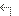
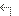

铁剑改
铁剑改 巨刀爆裂刀高级刀战术战略猫之魂猫之咒蛇剑【苍蛇】蛇剑【大蛇】蛇剑【白蛇】防御者哨兵异民族大剑深红羊首刀铁刀铁刀【禊】铁刀【神乐】斩破刀鬼斩破鬼神斩破刀骨刀改龙之颚魔像之刃瓦尔基里之刃泰坦尼亚红艳女爵骨刀【鲛牙】骨刀【龙牙】天下无双刀天上天下无双刀龍刀【焰】龍刀【红莲】飞龙刀【朱】飞龙刀【枫】飞龙刀【青叶】飞龙刀【翠】飞龙刀【葵】黑刀【零之型】黑刀【贰之型】黑刀【参之型】赤纹赤纹改巨剪镰刃苍钳刃切裂审判死刑执行人大斧双角魔剑角龙剑塔里亚拉特一角龙镰刀冰霜死神达人大剑水剑伽诺托托斯苍剑伽诺托托斯苍刃剑伽诺托托斯苍翼煌剑里欧雷乌斯封龍剑【灭一门】封龍剑【超灭一门】锈蚀的大剑钢冰大剑钢冰大剑−改达奥拉＝庄严风化的大剑提斯卡之刃提斯卡王之刃齐格蒙特高阶邪龍剑白之祖龍剑青龍刀【狼】斩首刀【军鸡】召雷剑【麒麟王】合金死亡剃刀大骨大鬼金棒
巨刀爆裂刀高级刀战术战略猫之魂猫之咒蛇剑【苍蛇】蛇剑【大蛇】蛇剑【白蛇】防御者哨兵异民族大剑深红羊首刀铁刀铁刀【禊】铁刀【神乐】斩破刀鬼斩破鬼神斩破刀骨刀改龙之颚魔像之刃瓦尔基里之刃泰坦尼亚红艳女爵骨刀【鲛牙】骨刀【龙牙】天下无双刀天上天下无双刀龍刀【焰】龍刀【红莲】飞龙刀【朱】飞龙刀【枫】飞龙刀【青叶】飞龙刀【翠】飞龙刀【葵】黑刀【零之型】黑刀【贰之型】黑刀【参之型】赤纹赤纹改巨剪镰刃苍钳刃切裂审判死刑执行人大斧双角魔剑角龙剑塔里亚拉特一角龙镰刀冰霜死神达人大剑水剑伽诺托托斯苍剑伽诺托托斯苍刃剑伽诺托托斯苍翼煌剑里欧雷乌斯封龍剑【灭一门】封龍剑【超灭一门】锈蚀的大剑钢冰大剑钢冰大剑−改达奥拉＝庄严风化的大剑提斯卡之刃提斯卡王之刃齐格蒙特高阶邪龍剑白之祖龍剑青龍刀【狼】斩首刀【军鸡】召雷剑【麒麟王】合金死亡剃刀大骨大鬼金棒